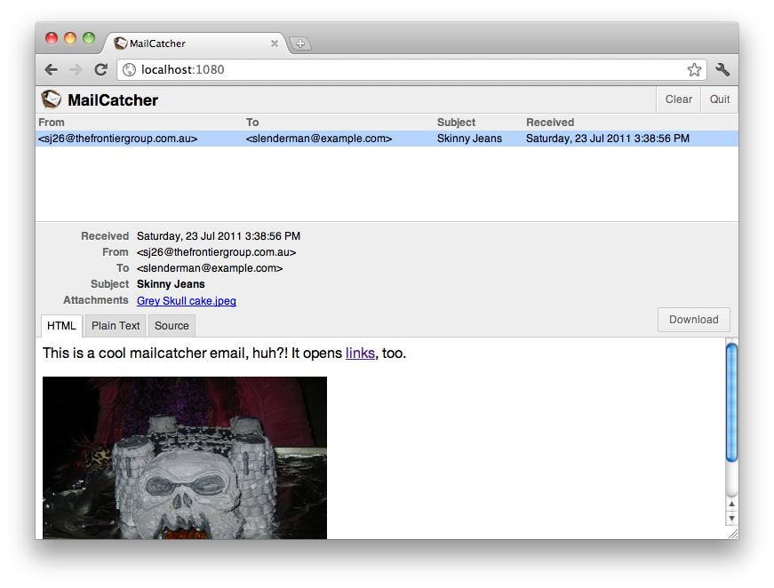

MailCatcher

Latest version: 0.6.4 (released Thursday, 4th February 2016)
Catches mail and serves it through a dream.
MailCatcher runs a super simple SMTP server which catches any message sent to it to display in a web interface. Run mailcatcher, set your favourite app to deliver to smtp://127.0.0.1:1025 instead of your default SMTP server, then check out http://127.0.0.1:1080 to see the mail that's arrived so far.

catchmail, makes using mailcatcher from PHP a lot easier.gem install mailcatchermailcatcherUse mailcatcher --help to see the command line options. The brave can get the source from the GitHub repository.
Please don't put mailcatcher into your Gemfile. It will conflict with your applications gems at some point.
Instead, pop a note in your README stating you use mailcatcher. Simply run gem install mailcatcher then mailcatcher to get started.
Under RVM your mailcatcher command may only be available under the ruby you install mailcatcher into. To prevent this, and to prevent gem conflicts, install mailcatcher into a dedicated gemset and create wrapper scripts:
rvm default@mailcatcher --create do gem install mailcatcher
rvm wrapper default@mailcatcher --no-prefix mailcatcher catchmail
To set up your rails app, I recommend adding this to your environments/development.rb:
config.action_mailer.delivery_method = :smtp
config.action_mailer.smtp_settings = { :address => "localhost", :port => 1025 }
For projects using PHP, or PHP frameworks and application platforms like Drupal, you can set PHP's mail configuration in your php.ini to send via MailCatcher with:
sendmail_path = /usr/bin/env catchmail -f some@from.address
You can do this in your Apache configuration like so:
php_admin_value sendmail_path "/usr/bin/env catchmail -f some@from.address"
If you've installed via RVM this probably won't work unless you've manually added your RVM bin paths to your system environment's PATH. In that case, run which catchmail and put that path into the sendmail_path directive above instead of /usr/bin/env catchmail.
If starting mailcatcher on alternative SMTP IP and/or port with parameters like --smtp-ip 192.168.0.1 --smtp-port 10025, add the same parameters to your catchmail command:
sendmail_path = /usr/bin/env catchmail --smtp-ip 192.160.0.1 --smtp-port 10025 -f some@from.address
For use in Django, simply add the following configuration to your projects' settings.py
if DEBUG:
EMAIL_HOST = '127.0.0.1'
EMAIL_HOST_USER = ''
EMAIL_HOST_PASSWORD = ''
EMAIL_PORT = 1025
EMAIL_USE_TLS = False
A fairly RESTful URL schema means you can download a list of messages in JSON from /messages, each message's metadata with /messages/:id.json, and then the pertinent parts with /messages/:id.html and /messages/:id.plain for the default HTML and plain text version, /messages/:id/:cid for individual attachments by CID, or the whole message with /messages/:id.source.
MailCatcher is just a mishmash of other people's hard work. Thank you so much to the people who have built the wonderful guts on which this project relies.
Thanks also to The Frontier Group for giving me the idea, being great guinea pigs and letting me steal pieces of time to keep the project alive.
I work on MailCatcher mostly in my own spare time. If you've found Mailcatcher useful and would like to help feed me and fund continued development and new features, please donate via PayPal. If you'd like a specific feature added to MailCatcher and are willing to pay for it, please email me.
Copyright © 2010-2011 Samuel Cochran (sj26@sj26.com). Released under the MIT License, see LICENSE for details.